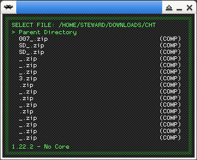
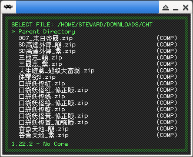

參考資訊：
https://github.com/trngaje/font2c
https://github.com/libretro/RetroArch/pull/11569/files#diff-06e6471e091940a030b417cbd24216c7a536f434b8665e639ad0e0c648d5d218
步驟如下：
1. Apply PR-11569 (Create Korean, Japanese, and Chinese fonts for rgui)
font2c.c
#include <stdio.h>
#include <stdlib.h>
#include <stdint.h>
#include <ft2build.h>
#include <freetype2/freetype/ftbitmap.h>
#define WIDTH 10
#define HEIGHT 10
#define BUFFERSIZE ((WIDTH * HEIGHT + 7) / 8)
static FT_Face face;
static FT_Error err;
static FT_Library library;
static FT_Bitmap tempbitmap;
static unsigned char image[BUFFERSIZE] = { 0 };
static void to_bitmap(
FT_Bitmap *bitmap,
FT_Int x,
FT_Int y,
FT_Int bitmap_left,
FT_Int bitmap_top)
{
FT_Int i = 0;
FT_Int j = 0;
FT_Int p = 0;
FT_Int q = 0;
FT_Int x_max = x + bitmap->width;
FT_Int y_max = y + bitmap->rows;
int alignoffset = 0;
int alignoffsetx = 0;
for (i = x, p = 0; i < x_max; i++, p++) {
for (j = y, q = 0; j < y_max; j++, q++) {
if ((i < 0) || (j < 0) || (i >= WIDTH || j >= HEIGHT)) {
continue;
}
if ((i + alignoffsetx >= WIDTH) || (j + alignoffset >= HEIGHT)) {
continue;
}
uint8_t rem = 1 << ((i + alignoffsetx + (j + alignoffset) * WIDTH) & 7);
uint8_t offset = (i + alignoffsetx + (j + alignoffset) * WIDTH) >> 3;
if (bitmap->buffer[q * bitmap->width + p]) {
image[offset] |= rem;
}
}
}
}
static int draw_glyph(unsigned short glyph, int *x, int *y)
{
FT_UInt glyph_index = 0;
FT_GlyphSlot slot = face->glyph;
glyph_index = FT_Get_Char_Index(face, glyph);
if (glyph_index == 0) {
return -1;
}
if ((err = FT_Load_Glyph( face, glyph_index, FT_LOAD_DEFAULT))) {
printf("failed to load glyph\n");
return -1;
}
if ((err = FT_Render_Glyph(face->glyph, FT_RENDER_MODE_MONO))) {
printf("failed render glyph\n");
return -1;
}
FT_Bitmap_New(&tempbitmap);
FT_Bitmap_Convert(library, &slot->bitmap, &tempbitmap, 1);
to_bitmap(&tempbitmap, *x, *y, slot->bitmap_left, slot->bitmap_top);
FT_Bitmap_Done(library, &tempbitmap);
return 0;
}
int main(int argc, char **argv)
{
int x = 0;
int y = 0;
char *filename = NULL;
memset(image, 0, BUFFERSIZE);
filename = argv[1];
if ((err = FT_Init_FreeType(&library))) {
printf("failed to init freetype\n");
exit(1);
}
if ((err = FT_New_Face(library, filename, 0, &face))) {
printf("failed to load face\n");
exit(1);
}
err = FT_Set_Pixel_Sizes(face, 11, 11);
FILE *pFile_Output = NULL;
pFile_Output = fopen(argv[2], "w");
fprintf(pFile_Output, "#ifndef __RGUI_FONT_BITMAPCHN_H__\n");
fprintf(pFile_Output, "#define __RGUI_FONT_BITMAPCHN_H__\n\n");
fprintf(pFile_Output, "#define FONT_CHN_WIDTH %d\n", WIDTH);
fprintf(pFile_Output, "#define FONT_CHN_HEIGHT %d\n", HEIGHT);
fprintf(pFile_Output, "#define FONT_CHN_HEIGHT_BASELINE_OFFSET 8\n");
fprintf(pFile_Output, "#define FONT_CHN_WIDTH_STRIDE (FONT_CHN_WIDTH + 1)\n");
fprintf(pFile_Output, "#define FONT_CHN_HEIGHT_STRIDE (FONT_CHN_HEIGHT + 1)\n");
fprintf(pFile_Output, "#define FONT_CHN_OFFSET(x) ((x) * ((FONT_CHN_HEIGHT * FONT_CHN_WIDTH+7) / 8))\n\n");
fprintf(pFile_Output, "static const unsigned char bitmap_chn_bin[] = {");
// kor : 0xac00 ~ 0xd7a3
// jpn : 0x3000 ~ 0x30ff
// chn : 0x4e00 ~ 0x9fff
// rus : 0x0400 ~ 0x045f
// eng : 0x0000 ~ 0x00ff
for (int g = 0x4e00, i = 0; g <= 0x9fff; g++) {
memset(image, 0, BUFFERSIZE);
draw_glyph(g, &x, &y);
if (i % 16 == 0) {
fprintf(pFile_Output, "\n");
}
fprintf(pFile_Output, "\n\t");
for (int y = 0; y < BUFFERSIZE; y++) {
fprintf(pFile_Output, "0x%02X,", image[y]);
}
fprintf(pFile_Output, "\t // 0x%x", g);
i += 1;
}
fprintf(pFile_Output, "\n};\n\n");
fprintf(pFile_Output, "#endif");
fclose(pFile_Output);
FT_Done_Face(face);
FT_Done_FreeType(library);
return 0;
}
2. 轉換字型
$ wget https://github.com/steward-fu/website/releases/download/xt897/font.ttf $ gcc font2c.c -o font2c -I/usr/include/freetype2 -lfreetype $ ./font2c font.ttf bitmapchn10x10.h
3. 編譯RetroARch
$ cp bitmapchn10x10.h gfx/drivers_font_renderer/bitmapchn10x10.h $ make -j4 $ ./retroarch
原始RetroArch

